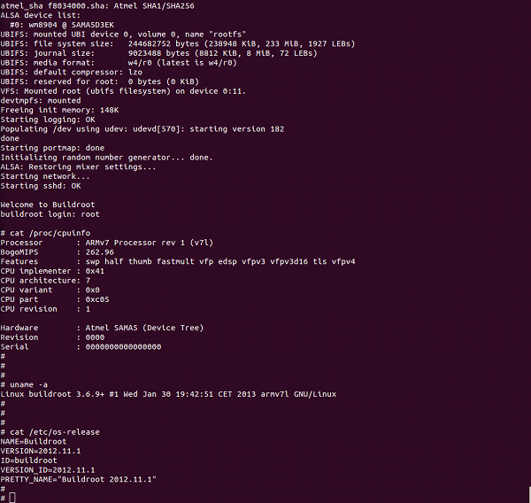

Flashing a demo for SAMA5D3x family
(for SAMA5D31, SAMA5D33, SAMA5D34, SAMA5D35 and SAMA5D36)
Evaluation Kit

Access the console on DBGU serial port
You can access the serial console through the on-board serial-USB converter. In fact, the Cortex-M3 chip underneath the Evaluation Kit acts as a serial-to-USB converter and is loaded with a firmware that is able to speak USB-CDC.- For Microsoft Windows users: Install the J-Link CDC USB driver
 . No need to install a driver on any regular Linux distribution.
. No need to install a driver on any regular Linux distribution.
- Connect the USB cable to the board (J14 – JTAG and USB Serial DBGU)
- For Microsoft Windows users: identify the USB connection that is established
JLink CDC UART Portshould appear in Device Manager. TheCOMxxnumber will be used to configure the terminal emulator.
- For Linux users: identify the USB connection by monitoring the last lines of
dmesgcommand. The/dev/ttyACMxnumber will be used to configure the terminal emulator.
[ 766.492942] usb 2-1.1: new high speed USB device using ehci_hcd and address 8
[ 766.585934] cdc_acm 2-1.1:1.0: This device cannot do calls on its own. It is not a modem.
[ 766.586033] cdc_acm 2-1.1:1.0: ttyACM0: USB ACM device
It is the CDC driver which is used and you can see that a /dev/ttyACM0 node has been created.
- Now open your favorite terminal emulator with appropriate settings
- sama5d2 revision A, only to access the ROMCode through serial interface and see the
RomBOOTmessage appearing, configure your serial line to 57600.
Change it back to 115200 for normal operation.
All components and demo binaries are now configured to work at115200 8-N-1.
115200 8-N-1 :
| Baud rate | 115200 |
| Data | 8 bits |
| Parity | None |
| Stop | 1 bit |
| Flow control | None |
Flashing the demo
Before flashing the demo, make sure that you have installed the SAM-BA tool on your host computer.- Connect a USB cable to the board (J20)
- JP9 must open so that (BMS == 1) to boot from on-chip Boot ROM
- Press and maintain PB4 BS_BOOT button and power up the board
PB4 CS_BOOT button prevents booting from Nand or serial Flash by disabling Flash Chip Selects - after having powered the board, you can release the PB4 BS_BOOT button
- For Microsoft Windows users: verify that the USB connection is well established
AT91 USB to Serial Convertershould appear in Device Manager
- For Linux users: check /dev/ttyACMx by monitoring the last lines of
dmesgcommand:
[ 766.492942] usb 2-1.1: new high speed USB device using ehci_hcd and address 8
[ 766.585934] cdc_acm 2-1.1:1.0: This device cannot do calls on its own. It is not a modem.
[ 766.586033] cdc_acm 2-1.1:1.0: ttyACM0: USB ACM device
It is the CDC driver which is used and you can see that a /dev/ttyACM0 node has been created.
- For Microsoft Windows users: Launch the
.batfile corresponding to the board that you are using
This script will run SAM-BA with proper parameters. - For Linux users: if the /dev/ttyACMx that appears is different from /dev/ttyACM0, edit the
.shfile and modify /dev/ttyACMx device number - For Linux users: Launch the
.shfile corresponding to the board that you are using.
This script will runs SAM-BA with proper parameters - When the logfile.log appears (this will take a few minutes), check that
=Done.=is written at the end of the file. - Remove the USB cable.
- Connect a serial link on USB CDC / DBGU connector and open the terminal emulator program as explained just above
- Power cycle the board.
- Look the system booting on the LCD screen or through the serial line
Playing with the demo
Now you should have the Linux demo up'n running on your board !You can access the Linux console through the serial line as explained just above
Use the
root login account without password.
|  |
Going forward
If you want to rebuild this demo from sources, go through each component topic and you will have a comprehensive explanation of its role and how to build it.

| I | Attachment | Action | Size | Date | Who | Comment |
|---|---|---|---|---|---|---|
| |
devman_AT91_USB_SAMBA-CDC.png | manage | 20.4 K | 2013-02-01 - 10:05 | NicolasFerre | |
| |
devman_jlink_CDC_UART.png | manage | 20.3 K | 2013-02-01 - 10:04 | NicolasFerre | |
| |
linux4sam_4.0_console_buildroot.png | manage | 162.8 K | 2013-02-01 - 14:02 | UnknownUser |
r11 - 21 May 2015 - 13:44:11 - NicolasFerre

{kind=link}
{kind=link}
{kind=link}
{kind=link}
{kind=link}
{kind=link}
Copyright © by the contributing authors. All material on this collaboration platform is the property of the contributing authors.
Linux® is the registered trademark of Linus Torvalds in the U.S. and other countries.
Microchip® and others, are registered trademarks or trademarks of Microchip Technology Inc. and its subsidiaries. 
Arm® and others are registered trademarks or trademarks of Arm Limited (or its affiliates). Other terms and product names may be trademarks of others.
Ideas, requests, contributions ? Connect to LinksToCommunities page.